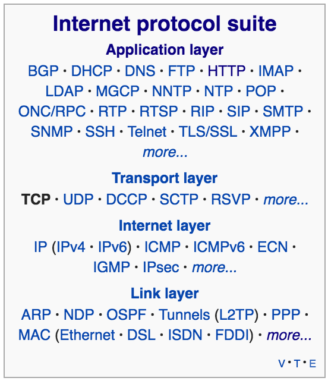
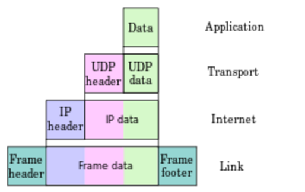

Foreword
This site is inspired by the '100 days of making' class at NYU's ITP grad progam. It serves as documentation and a point of reference for my own attempt at further understanding how the internet works. Every day, for one hundred days, I'll be identifying an idea, term or topic that I've encountered along the way, researching it, and doing my best to explain it in (mostly) my own words. Wikipedia serves as primary source, unless otherwise stated. My hope is that in the process of bolstering my own understanding, and creating a glossary of sorts, it might be of use to someone else in the future.
_0
HTTP
"Hypertext Transfer Protocol"
HTTP was initiated by Tim Berners-Lee at CERN in 1989. HTTP is a request-response application-level protocol based on the client-server model. HTTP is a TCP/IP based communication protocol that's used to deliver data (HMTL files, images, query results etc.) between computers in a standardized way. Basically, it's responsible for transporting most of the data across the world wide web. The connection defaults to TCP port 80. HTTP is both connectionless and stateless. This means that once an HTTP request is made, the client disconnects from the server and waits for a response. When the server responds, it re-establishes the connection in order to send the response. The fact that HTTP is stateless refers to the fact that the client are only aware of each other during the current request. Once it's over, they forget about each other. Any kind of data can be sent by HTTP, provided the client and server both know how to handle the data. Both client and server are required to specify the content's MIME-type. An HTTP request does exactly what it sounds like, as in it is requesting information/data from a specific server.
Request/Response Structure:
Every HTTP request/response has the same structure:
- A startline
- Zero or more header fields followed by CRLF (carriage return and line feed characters)
- An empty line (indicated end of header fields)
- Optional message-body
Each request/response contains a number of important HTTP Protocol Parameters (which are located in the headers). Header fields provide the necessary information about the request/response, or about the data in the message body. Header fields include information such as:
- HTTP Version,
- Uniform Resource Identifiers (URIs are used to identify a resource and establish a connection),
- Date/Time formats,
- Character sets (eg. US-Ascii),
- Content Encodings (this value indicates which encoding algorithm has been used to encode the content),
- Media Types (for data typing and type negotiation),
- Language Tags
Start-Line:
The start-line can either be a request-line, or status-line, depending on whether it was sent from the client or the server.
Both contains the HTTP version ( eg. HTTP/1.1), whereas the request-line will contain the request type (eg. GET) and the endpoint (eg. /example.html).
The Status line contains a status code (eg. 200) and a status message (eg. OK).
- Example Request-Line: GET /example.com HTTP/1.1
- Example Status-Line: HTTP/1.1 200 OK
Message Body:
The message body is optional, but if it is present it carries the entity-body of the request/response.
The Content-Type and Content-Length properties in the header describe the content.
The message body contains the actual data. In the case of a client request, this could be form data, a file that's been uploaded etc.
In the case of the server's response, it could contain a file, an image etc., but is more often that not an HTML page.
Request Methods:
The request method indicates the action to be performed on the resource identified
by the given Request-URI. The methods are as follows:
- GET: retrieves information from the server using the URI as a query string
- HEAD: same as GET, but transfers the status line and the header only
- POST: used to send data to server, eg. form data and files (more secure than GET)
- PUT: replaces target resource with uploaded content
- DELETE: removes target resource given by URI
- CONNECT: establisheds a tunnel to the server identified by URI
- OPTIONS: describe the communication options for the target resource, it can be used by the client to find out the HTTP methods and other options that the web server supports.
- TRACE: Performs a message loop back test along with the path to the target resource ( mainly used for debugging during development)
HTTP Status Codes and Messages:
Status codes are 3-digit integers that form part of the server response, indicating the success-state of the request. The first digit describes the class of the response.
- 1xx: Informational
- 2xx: Success
- 3xx: Redirection
- 4xx: Client Error
- 5xx: Server Error
Caching:
Performance across HTTP can be improved through the use of caching. Caching helps eliminate the need to send requests, in certain cases, as well as the need for the server to send full responses (ie. using the back button in the browser and reloading a page that you've previously visited. Certain information is cached so that it doesn't need to be requested from the server again). Caching can be control using the Cache-Control header
An important note on security:
HTTP clients come into contact with a lot of personalized/private data (eg. names, locations, email addresses, passwords, encryption keys etc.). HTTP is an unsecured, unecrypted protocol, and much of this information can be 'leaked'. For this reason, it's important to use HTTPS wherever possibly. Not only is it encrypted, but it's also been designed to be faster!
_1
TCP
"Transmission Control Protocol"
TCP is one of the main protocols belonging to the Internet Protocol Suite. It has its origins in the early network implementation in which it was complimented by the Internet Protocol ( IP ). For this reason, the entire suite is often referred to as TCP/IP. TCP forms part of the Transport Layer of the Internet Protocol Suite. The Transport Layer lives below the Application Layer (containing protocols like HTTP, DHCP, DNS, FTP, SSH etc.) and above the Internet Layer.
 Internet Protocol Suite (wikipedia)TCP provides more reliable, ordered and error-checked delivery of a stream of octets (bytes) between applications running on hosts communicating over an IP network. Internet applications such as the World Wide Web, e-mail, remote access, SSH, and file transfer are all dependent on TCP. TCP prioritizes reliability, as opposed to UDP which prioritizes reduced latency. TCP is a standardized protocol which means individual applications don't have to have knowledge of the mechanisms used for sending data via a link - for example how the data is split into packets. TCP handles all the particulars relating to handshaking and transmission and offers the application an abstraction of the connection.
TCP is a reliable stream delivery service which guarantees that all bytes received will be identical with bytes sent and in the correct order. Since packet transfer by many networks is not reliable, a technique known as 'positive acknowledgement with re-transmission' is used to guarantee reliability. This fundamental technique requires the receiver to respond with an acknowledgement message as it receives the data. The sender keeps a record of each packet it sends and maintains a timer from when the packet was sent. The sender re-transmits a packet if the timer expires before receiving the message acknowledgement. The timer is needed in case a packet gets lost or corrupted.
An important distinction to note is that IP handles the delivery of data, while TCP keeps track of the 'segments', or packets, that the data is divided into. For example, when an HTML file is sent from a web server, the TCP software layer of that server divides the sequence of file octets (bytes) into segments and forwards them individually to the IP software layer (Internet Layer). The Internet Layer encapsulates each TCP segment into an IP packet by adding a header that includes (among other data) the destination IP address. When the client program on the destination computer receives them, the TCP layer (Transport Layer) re-assembles the individual segments and ensures they are correctly ordered and error-free as it streams them to an application.
TCP accepts data from a datastream (ie. from an application), separates it into chunks, and adds a TCP header, thus creating a TCP segment. This segment is then encapsulated into an IP datagram. This encapsulated entity is often referred to as a 'data packet'. A TCP segment has a header and a data section. The data section carries the payload, while the header holds important information about the segment in at least 10 mandatory fields. This include:
- Source port (16bits)
- Destination port (16bits)
- Sequence Number (32 bits)
- Acknowledgement number (32 bits)
- Data offset (4 bits)
- Reserverd (3 bits)
- Flags, aka Control bits (9 bits)
- Window Size (16 bits)
- Checksum (16 bits)
- Urgent Pointer (16 bits)
- Options ( 0 - 320bits, in 32 bit incremenets )
- Padding
The TCP window prevents a fast sender from overwhelming a slow consumer application.
More to come...
_2
IP
"Internet Protocol"
The IP protocol standardizes the way computers (hosts), either over the internet or any other IP network, forward or route packages based on their IP addresses. In other words, its main responsibility is to relay datagrams across network boundaries. Delivery from the source host to the destination host ( thus communication is host-to-host ) is possible because both IP addresses are present in the packet headers. The protocol also defines the packet structure that encapsulates data passed down from the layers above ( eg. TCP or UDP from the Transport Layer ). Every datagram has a header and payload, where the payload contains data passed down from a layer above (eg. a TCP segment from the Transport Layer). This method of nesting the data payload in a packet with a header is called encapsulation.
 UDP datagram (wikipedia)IPv4 ( Internet Protocol Version 4 ) is the dominant protocol on the internet, with the adoption of its successor IPv6 ( Internet Protocol Version 6 ) taking place slowly. The slow adoption is due to a number of reason, primarily the cost of replacing the millions of devices that use IPv4 and their lack of compatibility with the new protocol.
Addressing and Routing:
Every host has an assosciated IP address. The address space is divided into network and subnetworks and is used to designate specific networks or routing prefixes. All hosts perform routing, however routers are responsible for transporting packets across network boundaries. Routers communicate with one another via routing protocols. IP routing also happens in local networks. Ethernet switches use MAC addresses to perform actual routing, but also make use of protocols such as IP multicasting.
_3
encapsulation
"encapsulation"
In a networking context, the method of nesting the data payload in a packet with a header is known as 'encapsulation'.
Programming: In a programming context, 'encapsulation' is a feature of OOP ( object-oriented programming ) and is a mechanism whereby access to an object's components are restricted from outside access. It can also be considered a method of combining methods/functions along with data inside a datastructure known as a 'class'.
_4
octet
"Octet"
An 'octet' and a 'byte' are essentially the same thing ( 8 bits of data ). However, the term 'octet' is used exclusively within the context of networks.
_5
UDP
"User Datagram Protocol"
UDP is a core member of the Internet Protocol Suite and resides in the Transport Layer. Data is transferred as datagrams to other hosts on an IP network. UDP is a simple connectionless transmission model that makes use of checksums for validating data integrity, and port numbers for addressing different functions at the source and destination of the datagram. Unlike TCP, UDP has no handshaking mechanism and as such, the reliability of delivery is determined by the underlying network. Therefore, there's no guarentee of delivery, ordering or duplicate protection. Any error checking that takes place needs to be performed in the application layer. In applications where speed is prefferable over reliability, like streaming, where dropped packets are not the end of the world, UDP is the preferred protocol.
Because it is transaction-oriented protocol, it's suitable for simple query-response protocols such as DNS ( Domain Name System ) and NTP ( Network Time Protocol ). Datagrams allowing for modeling other protocols involved in things like IP tunneling or RPC ( Remote Procedure Call ) and NFS ( Network File System ). Because the protocol is simple, it assists in accomplishing tasks without a full protocol stack, such as in the case of DHCP. The fact that it's stateless makes it suitable for a large number of clients, like when streaming media, and the lack of retransmission delays makes it suitable for realtime applications like VoIP and online games. In addition, because communication is unidirectional, it's suitable for broadcasting.
Packet StructureThe UDP header consists of four fields, each of which is 2 bytes. The fields are as follows:
- Source Port Number ( optional ): Identifies the sender's port.
- Destination Port Number: Identifies the receivers's port.
- Length: Specifes the length, in bytes, of the UDP header and payload data. The minimum length is 8 bytes (ie. just the header ). There is a theoretical limit of 65,535 bytes ( 8 byte header and 65,527 bytes of data ) in a UDP datagram. In reality it's slightly less due to the IP header size.
- Checksum ( optional ): The checksum field is used for error-checking of the header and data. It carries all zeros if unused.
Applications:
UDP applications are designed with packet loss, duplication and ordering erros in mind. Several vital internet applications make use of UDP such as DNS, SNMP, RIP, DHCP. Voice and video traffic is usually transferred using UDP because a slight loss in quality is preferred over delays due to packet-loss.
Features:
- Unidirectional: It's an end-to-end connectionless protocol that transmits information in one direction, refardless of the receiver's state.
- Unreliable: No concept of delivery acknowledgment, retransmission or timeout.
- Unordered: Order of packet receipt can't be predicted.
- Lightweight: No tracking of connections or ordering of messages means it's a small transport layer build on top of IP.
- Datagrams: Packets are sent individually and only checked for errors upon receipt by the application layer. Packets have defined boundaries, meaning the read operation at the receiver socket yields the message as it was originally sent.
- No congenstion control: The protocol has no implementation for contorlling congestion.
- Broadcasting: Because it is connectionless, UDP can broadcast, ie. packets can be addressed to be receivable by all devices on the subnet.
_6
datagram
"datagram"
Overview:
The specification defines a datagram as “A self-contained, independent entity of data carrying sufficient information to be routed from the source to the destination computer without reliance on earlier exchanges between this source and destination computer and the transporting network.”
In essence, a datagram is a basic transfer unit assosciated with a packet-switched network. 'Datagrams' and 'packets' are ostensibly the same, however a datagram is generally a packet from an unreliable service which cannot notify the sender if it fails. The term 'packet' can apply to any packet, reliable or not. Protocols like UDP have IP packets that can be described as datagrams. All IP packets are datagrams. However, a TCP segment can refer to an IP fragmentation of a datagram, which are then referred to as 'packets'.
Structure:
Every datagram has two components: the header and data payload. The header contains information required for routing
the datagram across an IP network. Headers will include things such as source and destination addresses,
whereas the payload contains the data being transported. The process of nesting payloads with headers is called encapsulation.